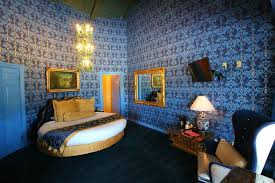

- ~The initial idea of the hotel was drawn on a napkin!
- ~It contains 110 rooms, each with their own special layout:
- •Room 169: Rendez-Vous
- 
-The color scheme of this room is a “heavenly blue”, embellished with gold and blue tiled walls, a grand chandelier, and a round-king bed (the only room that has this feature!).
- •Room 161: Cloud Nine
 - Upon looking at this room, you sense peace and tranquility, as you’re surrounded by multiple shades of white and pink, reaching towards a cotton-candy look.
- Upon looking at this room, you sense peace and tranquility, as you’re surrounded by multiple shades of white and pink, reaching towards a cotton-candy look.- •Room 137: Caveman
 - This room screams prehistoric times, as it’s filled with objects such as rocks and animal print to resemble the life of the cavemen. Even the walls are made out of stones, along with a waterfall in your stone shower.
- This room screams prehistoric times, as it’s filled with objects such as rocks and animal print to resemble the life of the cavemen. Even the walls are made out of stones, along with a waterfall in your stone shower.
- ~You need to book almost a year in advance to even have a chance at staying at any of the rooms!
- ~The hotel’s Gold Rush Steakhouse has the original balustrade from the Hearst castle, a historical landmark in the central coast of California. Furthermore, the attention of detail to the ceiling of the steakhouse is pivotal.